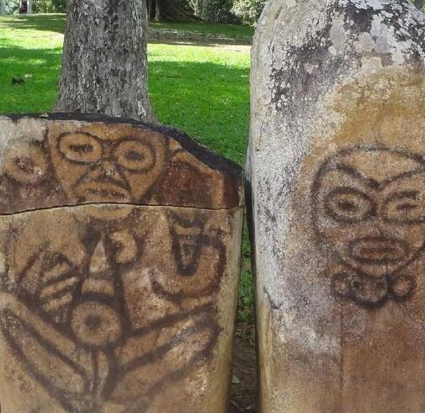

Biblioteca
Digital

Taínos: Arte y Sociedad
Monografía de Antropología
Arte Rupestre en Cuevas
Símbolos y Cosmovisión

Vida en Yucayeques
Estructura Social y Costumbres
Cacicazgos y Territorios
Mapas Geográficos Antiguos